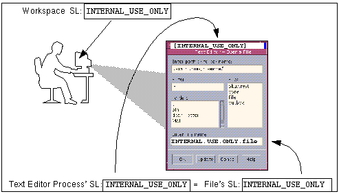
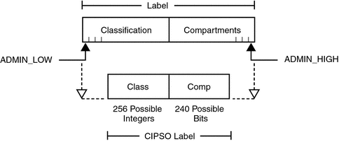
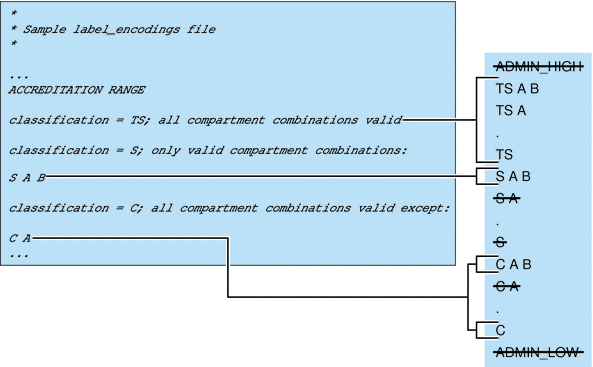
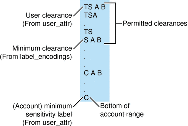
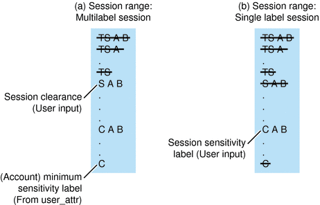
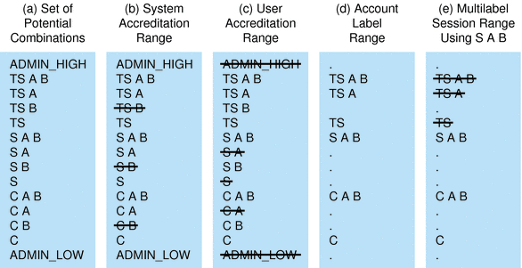

| Previous | Next |
1. Labels in Trusted Extensions Software
3. Making a Label Encodings File (Tasks)
4. Labeling Printer Output (Tasks)
5. Customizing LOCAL DEFINITIONS
6. Example: Planning an Organization's Labels
Types of Labels, Their Components and Uses
Trusted Extensions defines two types of labels:
Clearance labels, or clearances
Sensitivity labels, often referred to as labels
Sensitivity labels, label ranges, and a label limit or clearance determine who can access what objects on the system. Clearance labels are assigned to users. Sensitivity labels are assigned to processes, including users' processes, and to files and directories.
Some objects have a label range. These objects can be accessed at a particular label within the defined label range. A label range from ADMIN_LOW to ADMIN_HIGH allows access at all labels. The security administrator can narrow that label range. Objects with label ranges include the following:
All hosts and networks with which communications are allowed
Zones
Users and roles
Allocatable devices, such as tape drives, floppy drives, CD-ROM and DVD devices, and audio devices
Other devices that are not allocatable, for example, printers, workstations (controlled through the label range of the frame buffer), and serial lines when they are used as a login device
The various means for setting labels on these objects is described in Solaris Trusted Extensions Administrator’s Procedures. Device Allocation Manager GUI in Solaris Trusted Extensions Administrator’s Procedures describes how to set label ranges on devices.
Label Ranges Restrict Access
Label ranges set limits on the following:
The labels at which hosts can send and receive information.
The labels at which processes acting on behalf of users and roles can access files and directories in zones.
The labels at which users can allocate devices, thereby restricting the labels at which files can be written to storage media in these devices.
The labels at which users can send jobs to printers.
The labels at which users can log in to workstations. In addition to the user's label range, a label range on the frame buffer can be used to restrict access to a system.
Labels are automatically assigned to email messages, and the labels then show on printed emails.
Labels Are Used in Access Control Decisions
Labels are used to implement and control access on a computer. Labels implement mandatory access control (MAC). With Trusted Extensions, both discretionary access control (DAC) checks and MAC checks must pass before access is allowed to an object. As in the Solaris OS, DAC is based on permission bits and access control lists (ACLs). For more information, see Chapter 7, Controlling Access to Files (Tasks), in System Administration Guide: Security Services.
MAC compares the label of a process that is running an application with the label or the label range of any object that the process tries to access. The labels implement the set of rules that enforce policy. One rule is read down-read equal.. This rule applies when a process tries to access an object. The label of the process has to be greater than or equal to the label of the object, as in:
Label[Process] >= Label[Object]
On a system that is configured with Trusted Extensions, files and directories have slightly different access rules from each other and from process objects, network endpoint objects, device objects, and X window objects. In addition, an object can be accessed in three different ways. For each of the three ways that an object can be accessed, a slightly different set of rules applies:
The name of the file, directory, or device can be viewed
The contents or the attributes of the file, directory, or device can be viewed
The contents or the attributes of the file, directory, or device can be modified
Figure 1-1 shows a system that uses labels to make an access control decision.
Figure 1-1 Comparing the Label of a Text Editor with the Label of a File
In the preceding figure, a user brings up a text editor in a workspace with the label INTERNAL_USE_ONLY. The system sets the label of the process that is running the text editor to be equal to the label of the current workspace. Therefore, the text editor displays a label of INTERNAL_USE_ONLY. When the text editor attempts to open a file for editing, the label of the process that is running the text editor is compared to the label of the file. When the two labels are equal, access for writing is allowed.
If the label of a file is less than the label of the text editor, the file can be opened for reading only. For example, the INTERNAL_USE_ONLY text editor can open and read a system file at ADMIN_LOW, but the text file cannot be changed. Also, because of the read down requirement, a user cannot see a file whose label is higher than the current working label.
Label Components
Labels and clearances consist of a single classification and zero or more compartment words. The classification portion of a label indicates a relative level of protection. When a label is assigned to an object, the label's classification indicates the sensitivity of the information that is contained in the object. When a clearance is assigned to a user, the classification portion of the clearance label indicates the user's level of trust.
Trusted Extensions supports Common IP Security Option (CIPSO) labels. Each label and clearance label has a classification field that allows 256 values, and a 256-bit compartments field. You cannot use 0 (zero) for a classification, so you can define a total of 255 classifications. For CIPSO labels, 240 compartment bits are available, for a total of 2240 compartment combinations. The components are illustrated in the following figure.
Figure 1-2 CIPSO Label Definition
The ADMIN_HIGH label and the ADMIN_LOW label are administrative labels. These labels define the upper and lower bound of all labels on a system.
Each compartment word has one or more compartment bits assigned. The same compartment bit can be assigned to more than one word.
The textual format of a classification appears similar to the following:
CLASSIFICATIONS: name= TOP SECRET; sname= TS; value= 6;initial compartments= 4-5;
The compartment portion of a label is optional. Compartment words in a label can be used to represent different kinds of groupings, such as work groups, departments, divisions, or geographical areas. Compartment words can also further identify how information should be handled.
When initial compartments are part of the classification definition, then compartments are part of that label.
WORDS: name= A; compartments= 0; name= B; compartments= 1; name= CNTRY1; sname= c1; compartments= ~4; name= CNTRY2; sname= c2; compartments= ~5;
Possible labels from the preceding classifications and compartments include TS, TS A, TS B, and TS AB. A file with TS A would be available only to individuals who have the TS classification and the A compartment in their clearances. For an illustration, see Figure 1-3.
Label Dominance
When any type of label has a security level that is equal to or greater than the security level of a second label, the first label is said to dominate the second label. This comparison of security levels is based on classifications and compartments in the labels. The classification of the dominant label must be equal to or higher than the classification of the second label. Additionally, the dominant label must include all the compartments in the second label. Two equal labels are said to dominate each other.
By these criteria, TS A dominates TS, and TS dominates TS. The classification and compartment bits of the TS label are shown in the following figure.
Figure 1-3 Representation of the TS, TS A, TS B, and TS AB Labels

Another kind of dominance, strict dominance, is sometimes required for access. One label strictly dominates another label when the first label has a security level that is greater than the security level of the other label. Strict dominance is dominance without equality. The classification of the first label is higher than the classification of the second label. The first label contains all the compartments in the second label. Or, if the classifications of both labels are the same, the first label contains all the compartments in the second label plus one or more additional compartments.
Labels that are not in a dominance relationship are said to be disjoint. Disjoint labels would be appropriate to separate departments at a company. For example, the label TS HR (Human Resources) would be disjoint from TS Sales.
Accreditation Ranges, Label Ranges, and Valid Labels
Certain combinations of label components can be disqualified by rules in the label_encodings file. Combination rules implicitly define the organization's usable labels. The security administrator is responsible for specifying combination rules.
A valid or well-formed label is a label that satisfies a combination rule. The security administrator defines combination rules by using one of the following means:
Initial compartments (compartment bits) can be assigned to a classification.
Initial compartment bits are always associated with the classification in a label. For more details, see Classification Name Syntax.
A minimum classification, an output minimum classification, and a maximum classification can be associated with any word.
Hierarchies among words can be defined by the bit patterns that are chosen for each word.
Required combinations of words can be specified.
Combination constraints can be specified for words.
A minimum clearance and a minimum sensitivity label must be specified.
These system-wide minimums establish the lowest clearance and the lowest label that any ordinary user can have.
Two accreditation ranges are implicitly specified in the label_encodings file:
The term accreditation range is also used for the label ranges that are assigned to user and role accounts, printers, hosts, networks, and other objects. Because rules can constrain the set of valid labels, label ranges and accreditation ranges might not include all the potential combinations of label components in a range.
System Accreditation Range
The system accreditation range includes the administrative labels ADMIN_HIGH and ADMIN_LOW. The system accreditation range also includes all the well-formed labels that are constructed from the label components in the label_encodings file.
Administrative role accounts are usually the only accounts that can work at every label within the system accreditation range. An organization can also set up ordinary user accounts to be able to perform a task that requires an administrative label.
The following figure presents an example of how rules can constrain the labels permitted in a system accreditation range.
Figure 1-4 How System Accreditation Range Is Constrained By Rules

Figure 1-4 (a) shows all potential combinations given the classifications, TS (TOP SECRET), S (SECRET), and C (CONFIDENTIAL), and the compartments, A and B.
Figure 1-4 (b) shows a typical rule from the REQUIRED COMBINATIONS subsection of the SENSITIVITY LABELS section and its effects. The arrows point to the labels that are disqualified by the rule. Disqualified labels appear with lines through the labels. The REQUIRED COMBINATIONS syntax B A means that any label that has B as a compartment must also contain A. The converse is not true. Compartment A is not required to be combined with any other compartments. Since compartment B is only permitted when A is also present, the labels TS B, S B, and C B are not well-formed. Labels that are not well-formed are not in the system accreditation range.
User Accreditation Range
The user accreditation range is the largest set of labels that ordinary users can access when using Trusted Extensions. The user accreditation range always excludes ADMIN_HIGH and ADMIN_LOW. The user accreditation range is further constrained by any rules that constrain the System Accreditation Range. In addition, the user accreditation range can be constrained by a set of rules in the ACCREDITATION RANGE section. Figure 1-5 continues the Figure 1-4 example. Figure 1-5 shows three different types of rules in the ACCREDITATION RANGE section and their effects on the user accreditation range. The arrows point to the well-formed labels that the particular rule permits.
Figure 1-5 ACCREDITATION RANGE Portion of label_encodings File
As shown in the box to the right, the user accreditation range excludes ADMIN_HIGH and ADMIN_LOW. The rule for the TS classification includes all TS combinations except TS B. However, because TS B, and S B and C B, were previously overruled by the REQUIRED COMBINATIONS rule B A, as shown in Figure 1-4, TS A B, TS A, and TS are the only allowed TS combinations. Because S A B is defined as the only valid combination for the S classification, S B is excluded again. All C combinations except C A are valid according the rule for the C classification. However, because C B was overruled earlier, the only permitted combinations for the C classification are C A B and C.
Account Label Range
The account label range is the range of labels that is available to an individual user or to a role account. This range governs the labels at which the user can work when logging in to the system.
The labels that are available in the account label range have the following constraints:
The user clearance defines the top of the account label range.
A clearance does not have to be a valid label. Because it must dominate all labels at which the account is to work, the clearance must contain all the components of all the labels at which the account is to work.
The minimum label sets the bottom of the account label range.
The minimum sensitivity label in the label_encodings file defines an absolute minimum on labels at which any user can work.
The user accreditation range defines the set of valid labels from the user's clearance to the user's minimum label.
For example, a label_encodings file could prohibit the combination of compartments A, B, and C in a label.
The minimum label would be TS with no compartments.
TS A B C would be a valid clearance. TS A B C would not be a valid label.
Valid labels for a user would be TS, TS A, TS B, and TS C.
Account Label Range Examples
The possible clearances and minimum labels that can be assigned to an account are shown in the following figure. These labels are based on the accreditation examples from the previous sections.
Figure 1-6 Constraints on Account Label Ranges
In this example, TS A B is the highest label in the user accreditation range. This label contains the only two compartments, A and B, that are permitted to appear together in a label with any classification. The account range that is illustrated on the left is bounded at the top by TS A B. TS A B is the clearance assigned to the account. C is the account's minimum label. These definitions constrain the account to work at labels TS A B, TS A, TS, S A B, C A B, or C. The permitted clearances are TS A B, TS A, TS and S A B. A minimum clearance of S A B is set in the label_encodings file.
Even if TS A B was not a valid label, the security administrator could assign the label as a clearance. The assignment would allow the account to use any valid labels that are dominated by TS and that contain the words A and B. In contrast, if TS was assigned as the account clearance, the user could work at the labels TS and C only. TS without any compartments does not dominate S A B or C A B.
Table 1-1 Accreditation Range and Account Label Range Examples
Accreditation Range |
Account Label Range |
||||
|---|---|---|---|---|---|
Possible Labels |
System |
User |
TS A B Clearance, S A B Min Label |
TS Clearance, C Min Label |
ADMIN_LOW Clearance and Min Label, solaris.label.range Authorization |
ADMIN_HIGH |
ADMIN_HIGH |
|
|||
TS A B |
TS A B |
|
TS A B |
||
TS A |
TS A |
TS A |
TS A |
||
TS |
TS |
TS |
TS |
TS |
|
S A B |
S A B |
S A B |
S A B |
||
S A |
|
||||
S |
|
S |
|||
C A B |
C A B |
||||
C A |
C A |
|
|||
C |
C |
C |
C |
||
ADMIN_LOW |
ADMIN_LOW |
ADMIN_LOW |
|||
Table 1-1 illustrates the differences between the potential label combinations, the system accreditation range, the user accreditation range, and some sample account label ranges.
Ordinary users without any authorizations can work only with the labels in the User Accreditation Range column.
The fourth column shows the Account Label Range for a user with a clearance of TS A B and a minimum label of S A B. This range allows the user to work with the labels TS A B, TS A, TS, and S A B.
The fifth column of Table 1-1 shows an account with a clearance of TS and a minimum label of C. This account would be allowed to work only with TS, S, and C labels, because all the other valid labels that are dominated by TS include the words A and B. A and B are not in the clearance.
A sixth column shows a user who is authorized to work outside the user accreditation range. This user is assigned a single label of ADMIN_LOW.
Session Range
The session range is the set of labels that is available to a user account during a Trusted Extensions session. The session range is a function of the following constraints:
The label range of the user
The label that the user chose
The label range of the local system
The session range of a single-label account is the label of the account. A range of labels to choose from is possible only when a user account is configured to use multiple labels. User accounts that are configured to use multiple labels can choose different labels during the session. To specify a label, see How to Change the Label of a Workspace in Solaris Trusted Extensions User’s Guide.
The single label or session clearance that is chosen at login is in effect throughout the session until logout. During a multilabel session, the user can work at any valid label that is dominated by the session clearance and that dominates the user's minimum label.
Example Figure 1-6 is continued in Figure 1-7. In this example, the user can specify a session clearance that uses any well-formed label between TS A B and S A B.
The (a) portion of Figure 1-7 shows the labels that are available if the user selects a multilabel session with a session clearance of S A B. Because the other intermediate labels between S A B and C are not well-formed, the user can only work at S A B, C A B, or C.
The (b) portion of Figure 1-7 shows the labels that are available if the user selects a single-label session with a session label of C A B. Note that C A B is below the minimum clearance. However, C A B is accessible because the user is selecting a session label, not a clearance. Because the session is single-label, the user can work at only one label. In this example, the user specified C A B, although S A B or C could have been chosen instead.
Figure 1-7 Comparison of Session Ranges
The following figure summarizes the progressive eliminations of available labels in this example. The eliminated labels are shown with a line through them in the range where they are filtered out. The filtered out labels are not shown in subsequent ranges.
Figure 1-8 Cumulative Effect of Constraints on a Session Range
Label Availability in Trusted Extensions Sessions
The following table shows session label limitations and availability based on users' session choices. The table continues the example from Figure 1-8.
Table 1-2 Labels in Trusted Extensions Sessions
Multilevel Session |
Single-level Session |
|||
|---|---|---|---|---|
General Case |
Example #1 |
General Case |
Example #2 |
|
Multilevel with clearance of SECRET A B |
Single-level with session label of SECRET A B |
|||
Initial Workspace Label (at first login) |
Lowest label in account label range. |
CONFIDENTIAL |
Session label is specified by user |
SECRET A B |
Available Workspace Labels |
Any label in account label range up to the session clearance |
CONFIDENTIAL CONFIDENTIAL A B SECRET A B |
Session label is specified by user |
SECRET A B |
The left column identifies the types of label settings that are used in sessions.
The middle two columns apply to a Multilevel Session.
The right two columns apply to a Single-level Session.
The columns that are labeled General Case describe how the label types are determined.
The columns marked Example show a typical user's session selections at login.
In Example #1, the initial workspace label is set to CONFIDENTIAL, which is the label at the bottom of the user's account label range. The user can work at a label of CONFIDENTIAL, CONFIDENTIAL A B, or SECRET A B.
In Example #2, the user's initial workspace label is SECRET A B. Since the session is single-level, the only available workspace label is SECRET A B.
Labeled Workspaces
Labeled workspaces enable users to work at multiple labels during a single session.
If the user selects a range of labels for the session, the first workspace that comes up is at the user's minimum label. In CDE, buttons for three additional workspaces are created at the same minimum label in the workspace switch portion of the Front Panel.
Figure 1-9 Workspace Switch Area

For details on working in a labeled system, see Solaris Trusted Extensions User’s Guide.
| Previous | Next |